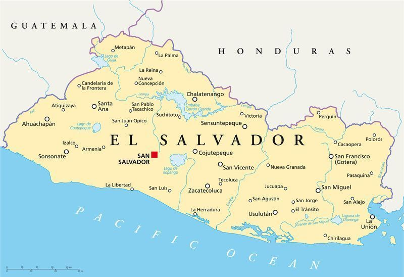
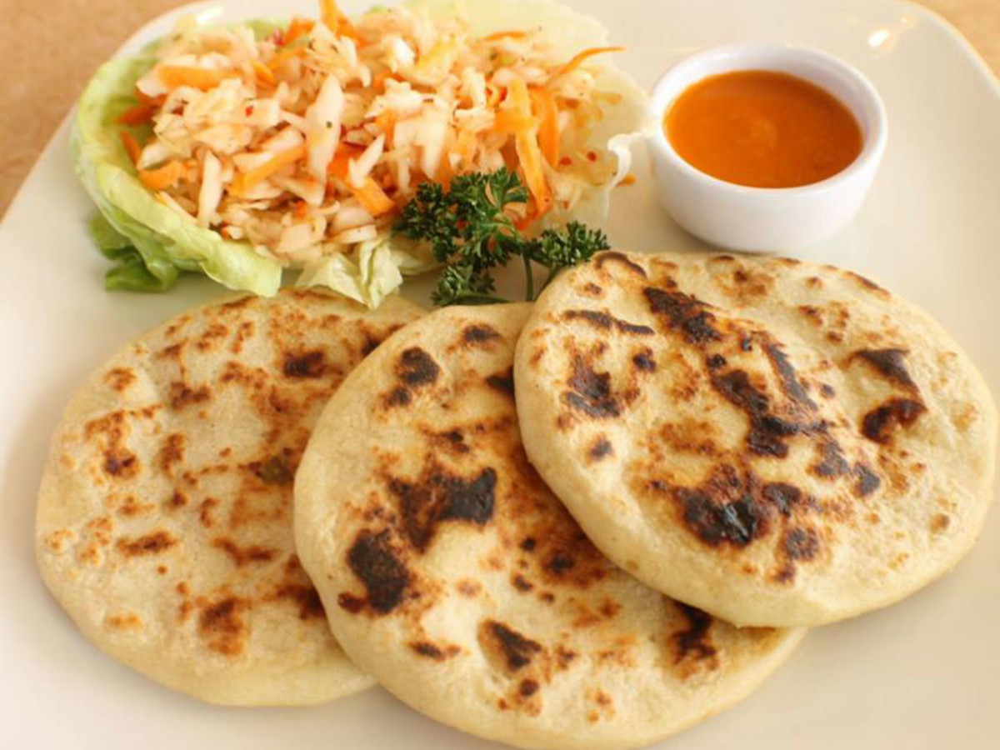

EL SALVADOR
|  |
Es un país ubicado en América Central, El Salvador limita con Guatemala al oeste y con Honduras al norte y al este, al sureste el golfo de Fonseca lo separa de Nicaragua, y flanqueado al sur por el océano Pacífico. Su territorio está organizado en 14 departamentos, 35 distritos y 262 municipios. La ciudad de San Salvador es la capital del país. Con tan solo 21,041 km², El salvador es el país más pequeño a nivel centroamericano, a pesar de su pequeña extensión de tierra, cuenta con más de 50 lugares turísticos. El salvador no solo se caracteriza por la naturalidad de sus paisajes, sino que también por su deliciosa comida. Las comidas típicas de El Salvador están marcadas por las tradiciones heredadas de los antepasados, especialmente de las culturas indígenas de los pipiles y de los lencas. |
Con la llegada de los españoles, que aportan el tomate y la cebolla, hace que nazca una nueva forma de preparar y combinar los productos alimenticios. Como podrás imaginar, la cocina de El Salvador aporta platillos sencillos, generalmente calientes, en porciones abundantes, aderezados con distintas salsas, y que se sirven en restaurantes o se preparan en casa, usualmente los domingos.
|
Las pupusas es el plato más destacado de El Salvador, que se funde con la historia de este país. Se realiza con harina de maíz, hasta darle forma de tortilla, y es muy parecida a la tradicional “arepa venezolana” o a las “gorditas mexicanas”. También se hacen pupusas con harina de arroz. Normalmente se rellena casi con cualquier ingrediente como queso, chicharrón de cerdo, carne o pollo, frijoles e inclusive pescado. También utilizan ingredientes autóctonos como el chipilín, ayote o el loroco, que les da a las pupusas, un sabor único y delicioso. Se acompaña con una salsa de cebolla, repollo y zanahoria, encurtidos en vinagre, y salsa de tomate fresco. Esta es otra de las comidas típicas de El Salvador, preparándose a partir de maíz y con variados ingredientes para darle el sabor característico. Podemos disfrutar de los tamales de: elote, chipilín, pisques o de pollo. |
 |
El Salvador posee una gran historia, muchas tradiciones que van desde la danza hasta su vestuario, aunque hoy en día ya no es muy común, hay épocas en el año en los que se conmemoran estas bellas tradiciones, el 15 de septiembre se celebra la independencia de este precioso país y es el día donde se puede observar con mayor énfasis la cultura que caracteriza al pueblo salvadoreño. Continuación te invitamos a conocer un poco más sobre este hermoso país y algunos de sus lugares turísticos.